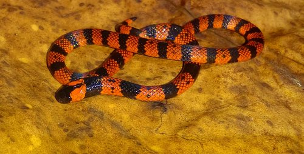

Coralillo arlequín (Micrurus tener)
Coralillo Centroamericana (Micrurus nigrocinctus)

Coralillo de bosque nublado (Micrurus nebularis)

Existen aproximadamente 3 921 especies de serpientes conocidas en todo el mundo, de las cuales 400 habitan
el territorio de México, cabe mencionar que 216 son especies endémicas, según datos proporcionados en la
ponencia virtual realizada para el 2º Encuentro de Experiencias del Conocimiento de Manejo de Conservación
del Centro de Investigaciones Biológicas (CIB).
El investigador Leonardo Fernández ha dedicado sus estudios e investigaciones principalmente a la
conservación de los anfibios y reptiles, por lo que en su ponencia virtual también explicó que México es el
primer país de América en poseer serpientes venenosas, siendo 73 especies viperidaes, 46 de cascabel y 17 de
elapidaes.
De igual manera se destaca que México ocupa el primer lugar a nivel mundial en especies de serpientes, lo
que implica una gran responsabilidad hablando de la conservación, ya que es una especie con funciones en el
ecosistema como depredadoras y controladoras de plagas. Estas afirmaciones se destacan, pues es sabido que
existen muertes en los humanos a causa de mordedura de serpientes venenosas, y es por ello que el humano,
por temor, mata millones de serpientes en el mundo.
Existen 5 tipos de serpientes venenosas en México que engloban a 77 especies: Coralillos o serpientes de
coral, Serpientes de cascabel o crotales, Nauyacas o víboras, Cantiles y una serpiente marina.
18 especies
36 especies
20 especies
2 especies
1 especie